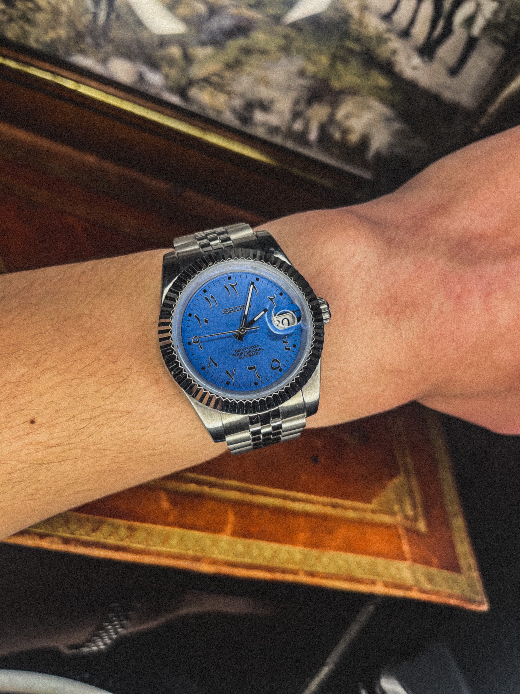

Neiko Project
Bienvenue chez Neiko Project, votre destination ultime pour des pièces de montres de haute qualité. Depuis notre création en 2023, nous nous efforçons de fournir aux amateurs de montres les meilleurs composants et accessoires pour leurs précieuses montres.


Notre équipe passionnée de professionnels de l'horlogerie travaille avec dévouement pour sélectionner et proposer une large gamme de boitiers, bracelets, cadrans, aiguilles et mouvements qui répondent aux normes les plus élevées de qualité et de précision. Que vous soyez un horloger professionnel ou un amateur éclairé, vous trouverez chez nous tout ce dont vous avez besoin pour réparer, personnaliser ou créer votre montre unique.
Chez Neiko Project, nous croyons en l'importance des détails et de l'artisanat. C'est pourquoi nous collaborons avec des fabricants et des fournisseurs renommés, réputés pour leur expertise et leur savoir-faire, afin de vous offrir des produits qui allient esthétique, durabilité et fiabilité.
Notre engagement envers la satisfaction de nos clients est notre priorité absolue. Nous nous efforçons de vous offrir une expérience d'achat exceptionnelle en mettant à votre disposition un service clientèle attentif, des informations détaillées sur nos produits et une livraison rapide et sécurisée.
Merci de nous faire confiance pour vos besoins en pièces de montres. Nous sommes impatients de vous accompagner dans votre passion pour l'horlogerie et de vous offrir des produits de qualité qui sublimeront votre montre.
L'équipe de Neiko Project.